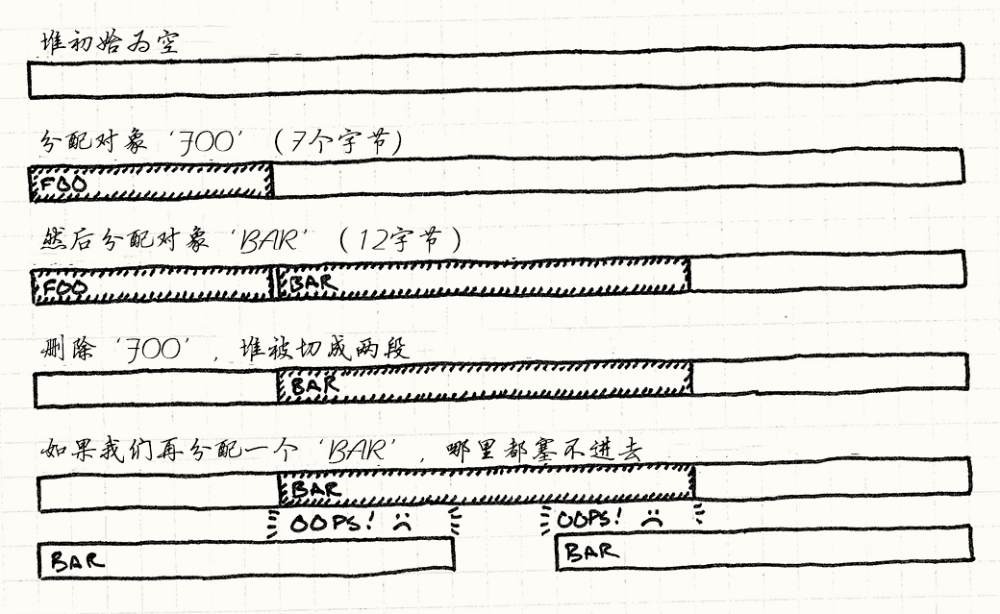

对象池
游戏设计模式Optimization Patterns
Intent
意图
Improve performance and memory use by reusing objects from a fixed pool instead of allocating and freeing them individually.
放弃独立地分配和释放对象，从固定的池子中重用对象，以提高性能和内存使用率
Motivation
动机
We’re working on the visual effects for our game. When the hero casts a spell, we want a shimmer of sparkles to burst across the screen. This calls for a particle system, an engine that spawns little sparkly graphics and animates them until they wink out of existence.
我们在处理游戏的视觉效果。 当英雄发射了法术，我们想要在屏幕上爆发闪光。 这需要调用粒子系统，由引擎产生的动态闪烁图形，显示动画直到消失。
Since a single wave of the wand could cause hundreds of particles to be spawned, our system needs to be able to create them very quickly. More importantly, we need to make sure that creating and destroying these particles doesn’t cause memory fragmentation.
由于一次简单的魔杖挥舞就能产生成百上千的粒子，系统需要能够快速制造它们。 更重要的是，我们需要保证制造和销毁这些粒子不会造成内存碎片。
The curse of fragmentation
碎片的诅咒
Programming for a game console or mobile device is closer to embedded programming than conventional PC programming in many ways. Memory is scarce, users expect games to be rock solid, and efficient compacting memory managers are rarely available. In this environment, memory fragmentation is deadly.
为游戏主机或者移动设备编程在许多方面比为普通的计算机编程更像嵌入式编程。 内存紧张，玩家希望游戏如岩石般稳定，有效压缩内存的管理器很难有效。 在这种环境下，内存碎片是致命的。
Fragmentation means the free space in our heap is broken into smaller pieces of memory instead of one large open block. The total memory available may be large, but the largest contiguous region might be painfully small. Say we’ve got fourteen bytes free, but it’s fragmented into two seven-byte pieces with a chunk of in-use memory between them. If we try to allocate a twelve-byte object, we’ll fail. No more sparklies on screen.
碎片意味着在堆中的空余空间被打碎成了很多内存的小碎片，而不是大的整块。 总共的可用内存也许很大，但是最大的连续空间可能难以忍受的小。 假设我们有十四个空余字节，但是被一块正在使用的内存分割成了两个七字节的碎片。 如果我们尝试分配十二字节的对象，就会失败。屏幕上不会有更多生气。

Even if fragmentation is infrequent, it can still gradually reduce the heap to an unusable foam of open holes and filled-in crevices, ultimately hosing the game completely.
哪怕碎片不频繁，它也仍会逐渐把堆变成了有空洞和裂隙的不可用泡沫，最终完全无法运行游戏。
The best of both worlds
两个世界中最好的部分
Because of fragmentation and because allocation may be slow, games are very careful about when and how they manage memory. A simple solution is often best — grab a big chunk of memory when the game starts, and don’t free it until the game ends. But this is a pain for systems where we need to create and destroy things while the game is running.
由于碎片和可能很慢的分配，游戏通常非常小心何时何处管理内存。 简单的方法是最好的——游戏开始时取一大块内存，然后直到游戏结束才去释放它。 但是这对于需要在游戏运行时创建和销毁事物的系统是痛苦的。
An object pool gives us the best of both worlds. To the memory manager, we’re just allocating one big hunk of memory up front and not freeing it while the game is playing. To the users of the pool, we can freely allocate and deallocate objects to our heart’s content.
对象池给了我们两个世界中最好的部分。 对于内存管理，我们只需要将一大块内存分出来，然后在游戏运行时不释放。 对于池的用户，我们可以简单的构建析构我们想要的内容的对象。
The Pattern
模式
Define a pool class that maintains a collection of reusable objects. Each object supports an “in use” query to tell if it is currently “alive”. When the pool is initialized, it creates the entire collection of objects up front (usually in a single contiguous allocation) and initializes them all to the “not in use” state.
定义一个包含了一组可重用对象的池对象。 每个对象支持“在使用中”查询来说明是不是“在使用”。 池被初始化时，它就创建了整个对象集合（通常在一次连续的分配中），然后初始化所有对象到“不在使用中”状态。
When you want a new object, ask the pool for one. It finds an available object, initializes it to “in use”, and returns it. When the object is no longer needed, it is set back to the “not in use” state. This way, objects can be freely created and destroyed without needing to allocate memory or other resources.
当你需要新对象，向池子要一个。 它找到一个可用对象，初始化为“使用中”，然后返回它。 当对象不再被需要，它被设置回“不在使用中”。 通过这种方式，可以轻易的创建和销毁对象，而不必分配内存或其他资源。
When to Use It
何时使用
This pattern is used widely in games for obvious things like game entities and visual effects, but it is also used for less visible data structures such as currently playing sounds. Use Object Pool when:
这个模式在可见事物上，比如游戏实体和视觉效果，广泛使用，但是它也可在不那么视觉化的数据结构上使用，比如正在播放的声音。 在以下情况中使用对象池：
-
You need to frequently create and destroy objects.
-
需要频繁创建和销毁对象。
-
Objects are similar in size.
-
对象大小相仿。
-
Allocating objects on the heap is slow or could lead to memory fragmentation.
-
在堆上分配对象缓慢或者会导致内存碎片。
-
Each object encapsulates a resource such as a database or network connection that is expensive to acquire and could be reused.
-
每个对象都封装了像数据库或者网络连接这样很昂贵又可以重用的资源。
Keep in Mind
记住
You normally rely on a garbage collector or new and delete to handle
memory management for you. By using an object pool, you’re saying, “I know
better how these bytes should be handled.” That means the onus is on you to deal
with this pattern’s limitations.
你通常依赖垃圾回收机制或者new和delete来处理内存管理。
通过使用对象池，你是在说，“我知道如何更好处理这些字节。”
这就意味着处理这个模式局限的责任在你了。
The pool may waste memory on unneeded objects
池可能在不需要的对象上浪费内存
The size of an object pool needs to be tuned for the game’s needs. When tuning, it’s usually obvious when the pool is too small (there’s nothing like a crash to get your attention). But also take care that the pool isn’t too big. A smaller pool frees up memory that could be used for other fun stuff.
对象池的大小需要为游戏的需求设置。 当池子太小时，调整是很明显的（没有什么比崩溃更能获得注意力）。 但是小心池子没有太大。更小的池子缓解了可以做其他有趣事情的内存的压力。
Only a fixed number of objects can be active at any one time
同时只能激活固定数量的对象
In some ways, this is a good thing. Partitioning memory into separate pools for different types of objects ensures that, for example, a huge sequence of explosions won’t cause your particle system to eat all of the available memory, preventing something more critical like a new enemy from being created.
在某种程度上，这是好事。 将内存为不同的对象类型分配分离的池子保证了这点。 举个例子，一连串爆炸不会让粒子系统消耗所有可用内存，避免阻碍创建新敌人这样的关键事件。
Nonetheless, this also means being prepared for the possibility that your attempt to reuse an object from the pool will fail because they are all in use. There are a few common strategies to handle this:
尽管如此，这也意味着试图从池子重用对象可能会失败，因为都在使用中。 这里有几个常用策略来处理：
-
Prevent it outright. This is the most common “fix”: tune the pool sizes so that they never overflow regardless of what the user does. For pools of important objects like enemies or gameplay items, this is often the right answer. There may be no “right” way to handle the lack of a free slot to create the big boss when the player reaches the end of the level, so the smart thing to do is make sure that never happens.
-
完全阻止这点。这是通常的“修复”：增加对象池的大小，这样无论用户做什么，它们都不会溢出。对于重要对象，比如敌人或游戏道具，这通常是正确的选择。这也许没有“正确的”方法来处理玩家抵达关底时创建巨大Boss内存不足问题，所以最聪明的办法就是保证这不发生。
The downside is that this can force you to sit on a lot of memory for object slots that are needed only for a couple of rare edge cases. Because of this, a single fixed pool size may not be the best fit for all game states. For instance, some levels may feature effects prominently while others focus on sound. In such cases, consider having pool sizes tuned differently for each scenario.
这个的反面是强迫你为那些只在一两个危险边缘需要的对象分配过多的内存。由于这个，固定大小的内存池也许不对所有的游戏状态都适用。举个例子，某些关卡也许需要更多的效果而其他的需要声音。在这种情况下，考虑为每个场景调整对象池大小。
-
Just don’t create the object. This sounds harsh, but it makes sense for cases like our particle system. If all particles are in use, the screen is probably full of flashing graphics. The user won’t notice if the next explosion isn’t quite as impressive as the ones currently going off.
-
就不要创建对象了。这听起来很糟，但是对于像粒子系统这样的情况很有道理。如果所有的粒子都在使用，那么屏幕已经充满了闪动的图形。用户不会注意到下个爆炸不如现在运行的这个引人注目。
-
Forcibly kill an existing object. Consider a pool for currently playing sounds, and assume you want to start a new sound but the pool is full. You do not want to simply ignore the new sound — the user will notice if their magical wand swishes dramatically sometimes and stays stubbornly silent other times. A better solution is to find the quietest sound already playing and replace that with our new sound. The new sound will mask the audible cutoff of the previous sound.
-
强制干掉一个已有的对象。思考正在播放声音的内存池，假设需要播放新声音而池子满了。你不想简单地忽视新声音——用户会注意到魔法剑有时会发出戏剧般的声音，有时顽固的一声不吭。更好的解决方法是找到播放中最轻的声音，然后用新声音替代之。新声音会覆盖掉前一个声音。
In general, if the disappearance of an existing object would be less noticeable than the absence of a new one, this may be the right choice.
大体上，如果已有对象的消失要比新对象的出现更不引人察觉，这也许是正确的选择。
-
Increase the size of the pool. If your game lets you be a bit more flexible with memory, you may be able to increase the size of the pool at runtime or create a second overflow pool. If you do grab more memory in either of these ways, consider whether or not the pool should contract to its previous size when the additional capacity is no longer needed.
-
增加池的大小。如果游戏允许你使用一点内存上的灵活性，我们也许会在运行时增加池子的大小或者创建新的溢出池。如果用这些方式获取内存，考虑在增加的存量不再需要时，池子是否需要缩回原来的大小。
Memory size for each object is fixed
每个对象的内存大小是固定的
Most pool implementations store the objects in an array of in-place objects. If all of your objects are of the same type, this is fine. However, if you want to store objects of different types in the pool, or instances of subclasses that may add fields, you need to ensure that each slot in the pool has enough memory for the largest possible object. Otherwise, an unexpectedly large object will stomp over the next one and trash memory.
多数池将对象存储在一个数组中。 如果你所有的对象都是同样的类型，这很好。 但是，如果你想要将不同的对象存储在相同的池中，你需要保证池中的每个位置对最大的可能对象都有足够的内存。 否则，超过预期大小对象会踩到下一个的位置，然后破坏内存。
At the same time, when your objects vary in size, you waste memory. Each slot needs to be big enough to accommodate the largest object. If objects are rarely that big, you’re throwing away memory every time you put a smaller one in that slot. It’s like going through airport security and using a huge carry-on-sized luggage tray just for your keys and wallet.
同时，如果你的对象大小是变化的，你在浪费内存。 每个槽都需要能存储最大的对象。 如果对象很少那么大，每放进去一个小对象都是在浪费内存。 这很像是通过机场安检时，使用最大允许尺寸的托盘，里面只放了钥匙和钱包。
When you find yourself burning a lot of memory this way, consider splitting the pool into separate pools for different sizes of object — big trays for luggage, little trays for pocket stuff.
当你发现在用这种方式浪费内存，思考将池为不同大小的对象分割为分离的池子 ——大托盘给大行李，小托盘给口袋里东西。
Reused objects aren’t automatically cleared
重用对象不会自动清除。
Most memory managers have a debug feature that will clear freshly allocated or
freed memory to some obvious magic value like 0xdeadbeef. This helps you find
painful bugs caused by uninitialized variables or using memory after it’s freed.
很多内存管理系统有debug特性会清除或释放所有内存成特定的值比如0xdeadbeef。
这帮助你找到使用未初始化变量或使用已被释放内存造成的痛苦漏洞。
Since our object pool isn’t going through the memory manager any more when it reuses an object, we lose that safety net. Worse, the memory used for a “new” object previously held an object of the exact same type. This makes it nearly impossible to tell if you forgot to initialize something when you created the new object: the memory where the object is stored may already contain almost correct data from its past life.
由于对象池重用对象不再经过内存管理系统，我们失去了安全网。 更糟的是，为“新”对象使用的内存之前存储的是同样类型的相同对象。 这当你创建新对象时的未初始化问题就几乎不可能找到了： 那个对象存储的内存已经保存了来自于上个生命周期的几乎完全正确的数据。
Because of this, pay special care that the code that initializes new objects in the pool fully initializes the object. It may even be worth spending a bit of time adding a debug feature that clears the memory for an object slot when the object is reclaimed.
由于这一点，特别注意在池里初始化对象的代码，保证它完全地初始化了对象。 甚至很值得加个在对象回收时清空对象槽的debug选项。
Unused objects will remain in memory
未使用的对象会保留在内存中
Object pools are less common in systems that support garbage collection because the memory manager will usually deal with fragmentation for you. But pools are still useful there to avoid the cost of allocation and deallocation, especially on mobile devices with slower CPUs and simpler garbage collectors.
对象池在支持垃圾回收的系统中很少见，因为内存管理系统通常会为你处理这些碎片。 但是池仍然是避免构建和析构的有用手段，特别是在有更慢CPU和更简陋垃圾回收系统的移动设备上。
If you do use an object pool in concert with a garbage collector, beware of a potential conflict. Since the pool doesn’t actually deallocate objects when they’re no longer in use, they remain in memory. If they contain references to other objects, it will prevent the collector from reclaiming those too. To avoid this, when a pooled object is no longer in use, clear any references it has to other objects.
如果你用有垃圾回收的对象池系统，注意潜在的冲突。 由于池不会在对象不再使用的时候真正的析构它们，如果它们仍然保留任何对其他对象的引用，也会防止垃圾回收器回收。 为了避免这一点，当池中对象不再使用，清除它对其他对象的所有引用。
Sample Code
示例代码
Real-world particle systems will often apply gravity, wind, friction, and other physical effects. Our much simpler sample will only move particles in a straight line for a certain number of frames and then kill the particle. Not exactly film caliber, but it should illustrate how to use an object pool.
现实世界的粒子系统通常应用重力，风，摩擦，和其他物理效果。 我们简陋的例子只在直线上特定帧移动粒子，然后销毁粒子。 这不是工业级的品质，但它足够说明如何使用对象池。
We’ll start with the simplest possible implementation. First up is the little particle class:
我们应该从最简单的可能实现开始。第一是小小的粒子类：
class Particle { public: Particle() : framesLeft_(0) {} void init(double x, double y, double xVel, double yVel, int lifetime) { x_ = x; y_ = y; xVel_ = xVel; yVel_ = yVel; framesLeft_ = lifetime; } void animate() { if (!inUse()) return; framesLeft_--; x_ += xVel_; y_ += yVel_; } bool inUse() const { return framesLeft_ > 0; } private: int framesLeft_; double x_, y_; double xVel_, yVel_; };
The default constructor initializes the particle to “not in use”. A later call
to init() initializes the particle to a live state. Particles are animated
over time using the unsurprisingly named animate() function, which should be
called once per frame.
默认的构造器将粒子初始化为“不在使用中”。之后对init()的调用初始化了粒子到活跃状态。
粒子随着时间动画，使用意料之中的animate()函数，它一帧被调用一次。
The pool needs to know which particles are available for reuse. It gets this
from the particle’s inUse() function. This function takes advantage of the fact that
particles have a limited lifetime and uses the framesLeft_ variable to
discover which particles are in use without having to store a separate flag.
池需要知道哪个粒子可以重用。它通过粒子的inUse()函数获知这点。
这个函数利用了粒子只有有限的生命时间，并使用framesLeft_变量来决定哪些粒子在被使用而无需存储分离的标识。
The pool class is also simple:
池类也很简单：
class ParticlePool { public: void create(double x, double y, double xVel, double yVel, int lifetime); void animate() { for (int i = 0; i < POOL_SIZE; i++) { particles_[i].animate(); } } private: static const int POOL_SIZE = 100; Particle particles_[POOL_SIZE]; };
The create() function lets external code create new particles. The game calls
animate() once per frame, which in turn animates
each particle in the pool.
create()函数让其他代码创建新粒子。
游戏每帧调用animate()一次，让池中粒子轮流显示动画。
The particles themselves are simply stored in a fixed-size array in the class. In this sample implementation, the pool size is hardcoded in the class declaration, but this could be defined externally by using a dynamic array of a given size or by using a value template parameter.
粒子本身被存储在类中一个固定大小的数组里。 在这个简单的实现中，池的大小在类声明时被硬编码了，但是也可以使用给定大小的动态数组或使用由外部定义的模板变量。
Creating a new particle is straightforward:
创建新粒子很直观：
void ParticlePool::create(double x, double y, double xVel, double yVel, int lifetime) { // Find an available particle. for (int i = 0; i < POOL_SIZE; i++) { if (!particles_[i].inUse()) { particles_[i].init(x, y, xVel, yVel, lifetime); return; } } }
We iterate through the pool looking for the first available particle. When we find it, we initialize it and we’re done. Note that in this implementation, if there aren’t any available particles, we simply don’t create a new one.
我们遍历池来找到第一个可用粒子。 当我们找到后，初始化它然后就完成了。 注意在这个实现中，如果这里没有任何可用的粒子，就不创建新的。
That’s all there is to a simple particle system, aside from rendering the particles, of course. We can now create a pool and create some particles using it. The particles will automatically deactivate themselves when their lifetime has expired.
做一个简单粒子系统的所有东西都在这里了，当然，没有包含渲染粒子。 我们现在可以创建池然后使用它创建粒子。当时间到了，粒子会自动失效。
This is good enough to ship a game, but keen eyes may have noticed that creating a new particle requires iterating through (potentially) the entire collection until we find an open slot. If the pool is very large and mostly full, that can get slow. Let’s see how we can improve that.
这足够承载一个游戏，但是敏锐的目光也许会注意到创建新粒子（可能）需要遍历整个集合，直到我们找到一个空闲槽。 如果池子很大很满，这可能很慢。 让我们看看可以怎样改进这一点。
A free list
一个空闲列表
If we don’t want to waste time finding free particles, the obvious answer is to not lose track of them. We could store a separate list of pointers to each unused particle. Then, when we need to create a particle, we remove the first pointer from the list and reuse the particle it points to.
如果不想浪费时间在查找空闲粒子上，明星的答案是不要失去对它们的追踪。 我们可以存储分离的指向每个未使用的粒子的指针列表。 然后，当需要创建粒子时，我们从列表中移除第一个指针，然后重用它指向的粒子。
Unfortunately, this would require us to maintain an entire separate array with as many pointers as there are objects in the pool. After all, when we first create the pool, all particles are unused, so the list would initially have a pointer to every object in the pool.
不幸的是，这回要我们管理一个和池同样大小的分离数组。 无论如何，在我们创建池时，所有的粒子都没有用，所以列表初始会对池中每个对象都有一个指针。
It would be nice to fix our performance problems without sacrificing any memory. Conveniently, there is some memory already lying around that we can borrow — the data for the unused particles themselves.
如果能够修复我们的性能问题，无需牺牲任何内存就好了。 方便的是，这里已经有可以借走的内存了——那些存储未使用粒子本身的内存。
When a particle isn’t in use, most of its state is irrelevant. Its position and
velocity aren’t being used. The only state it needs is the stuff required to
tell if it’s dead. In our example, that’s the framesLeft_ member. All those
other bits can be reused. Here’s a revised particle:
当粒子没有被使用，它大部分的状态都是无关紧要的。
它的位置和速度没有使用。唯一需要的有没有死亡的状态。
在我们的例子中，那是framesLeft_成员。
所有其他的位都可以被重用。这里是一个改进的粒子：
class Particle { public: // ... Particle* getNext() const { return state_.next; } void setNext(Particle* next) { state_.next = next; } private: int framesLeft_; union { // State when it's in use. struct { double x, y; double xVel, yVel; } live; // State when it's available. Particle* next; } state_; };
We’ve moved all of the member variables except for framesLeft_
into a live struct inside a state_ union. This
struct holds the particle’s state when it’s being animated. When the particle is
unused, the other case of the union, the next member, is used. It holds a
pointer to the next available particle after this one.
我们将除framesLeft_外的所有成员变量移到union中的state_中的live结构。
这个结构在动作时保存粒子的状态。
当粒子被重用时，union的其他部分，next成员被使用了。
它保留了一个指向这个后面的其他可用粒子的指针。
We can use these pointers to build a linked list that chains together every unused particle in the pool. We have the list of available particles we need, but we didn’t need to use any additional memory. Instead, we cannibalize the memory of the dead particles themselves to store the list.
我们可以使用这些指针构建链表，将池中每个未使用粒子都连在一起。 我们有可用的粒子的列表，但是无需使用多余的内存。 我们使用了死亡粒子本身的内存来排列列表。
This clever technique is called a free list. For it to work, we need to make sure the pointers are initialized correctly and are maintained when particles are created and destroyed. And, of course, we need to keep track of the list’s head:
这种聪明的技术被称为freelist。 为了让其工作，我们需要保证指针正确的初始化，在粒子创建和销毁时好好被管理了。 并且，当然，我们要追踪列表的头：
class ParticlePool { // ... private: Particle* firstAvailable_; };
When a pool is first created, all of the particles are available, so our free list should thread through the entire pool. The pool constructor sets that up:
当池被首次创建，所有的粒子都是可用的，所以空余列表应该穿过整个池。池构造器设置了这些：
ParticlePool::ParticlePool() { // The first one is available. firstAvailable_ = &particles_[0]; // Each particle points to the next. for (int i = 0; i < POOL_SIZE - 1; i++) { particles_[i].setNext(&particles_[i + 1]); } // The last one terminates the list. particles_[POOL_SIZE - 1].setNext(NULL); }
Now to create a new particle, we jump directly to the first available one:
现在为了创建新粒子，我们直接跳到首个可用的：
void ParticlePool::create(double x, double y, double xVel, double yVel, int lifetime) { // Make sure the pool isn't full. assert(firstAvailable_ != NULL); // Remove it from the available list. Particle* newParticle = firstAvailable_; firstAvailable_ = newParticle->getNext(); newParticle->init(x, y, xVel, yVel, lifetime); }
We need to know when a particle dies so we can add it back to the free list, so
we’ll change animate() to return true if the previously live particle gave
up the ghost in that frame:
我们需要知道粒子死亡，这样可将其放回到空闲列表中，所以我们将animate()改为在上个活跃粒子放弃存在时返回true：
bool Particle::animate() { if (!inUse()) return false; framesLeft_--; x_ += xVel_; y_ += yVel_; return framesLeft_ == 0; }
When that happens, we simply thread it back onto the list:
当那发生时，简单地将其放回列表：
void ParticlePool::animate() { for (int i = 0; i < POOL_SIZE; i++) { if (particles_[i].animate()) { // Add this particle to the front of the list. particles_[i].setNext(firstAvailable_); firstAvailable_ = &particles_[i]; } } }
There you go, a nice little object pool with constant-time creation and deletion.
这样就成了，一个小对象池，拥有常量时间的构造和删除。
Design Decisions
设计决策
As you’ve seen, the simplest object pool implementation is almost trivial: create an array of objects and reinitialize them as needed. Production code is rarely that minimal. There are several ways to expand on that to make the pool more generic, safer to use, or easier to maintain. As you implement pools in your games, you’ll need to answer these questions:
如你所见，对象池最简单实现是几乎微不足道的：创建对象数组，在需要它们时重新初始化。 产出的代码很少会那么少，这里还有很多方式让池更加的通用，安全，或容易管理。 在游戏中实现对象池时，你需要回答以下问题：
Are objects coupled to the pool?
对象和池耦合吗？
The first question you’ll run into when writing an object pool is whether the objects themselves know they are in a pool. Most of the time they will, but you won’t have that luxury when writing a generic pool class that can hold arbitrary objects.
第一个你写对象池需要思考的问题：是否对象本身需要知道它们在池子中。 大多数情况下它们需要，但是你不大可能写一个通用对象池类来保存任意对象。
-
If objects are coupled to the pool:
-
如果对象与池耦合：
-
The implementation is simpler. You can simply put an “in use” flag or function in your pooled object and be done with it.
-
实现更简单。你可以在对象中简单地放个“在使用中”标识或者函数，就完成了。
-
You can ensure that the objects can only be created by the pool. In C++, a simple way to do this is to make the pool class a friend of the object class and then make the object’s constructor private.
-
你可以保证对象只能被池创建。在C++中，做这事最简单的方法是让池对象是对象类的友类，让对象的构造器私有。
class Particle { friend class ParticlePool; private: Particle() : inUse_(false) {} bool inUse_; }; class ParticlePool { Particle pool_[100]; };
This relationship documents the intended way to use the class and ensures your users don’t create objects that aren’t tracked by the pool.
在类间保持这种关系来确保用户无法创建对象池没有追踪的对象。
-
You may be able to avoid storing an explicit “in use” flag. Many objects already retain some state that could be used to tell whether it is alive or not. For example, a particle may be available for reuse if its current position is offscreen. If the object class knows it may be used in a pool, it can provide an
inUse()method to query that state. This saves the pool from having to burn some extra memory storing a bunch of “in use” flags. -
你也许可以避免显式存储“在使用中”标识。很多对象已经保存了可以告诉外界它有没有在使用的状态。举个例子，一个粒子的位置如果不在屏幕上，也许它就可以被重用。如果对象类知道它在对象池中，那它可以提供一个
inUse()来查询那个状态。这省下了对象池存储“在使用中”标识的多余内存。
-
-
If objects are not coupled to the pool:
-
如果对象没有和池子耦合：
-
Objects of any type can be pooled. This is the big advantage. By decoupling objects from the pool, you may be able to implement a generic reusable pool class.
-
可以保存多种类型的对象。这是最大的好处。通过解耦对象和对象池，你可以实现通用的可重用对象池类。
-
The “in use” state must be tracked outside the objects. The simplest way to do this is by creating a separate bit field:
-
“使用中”状态必须在对象的外部追踪。做这点最简单的方式是创建分离的位字段：
template <class TObject> class GenericPool { private: static const int POOL_SIZE = 100; TObject pool_[POOL_SIZE]; bool inUse_[POOL_SIZE]; };
-
What is responsible for initializing the reused objects?
谁负责初始化重用对象？
In order to reuse an existing object, it must be reinitialized with new state. A key question here is whether to reinitialize the object inside the pool class or outside.
为了重用一个已经存在的对象，它必须用新状态重新初始化。 这里的关键问题是你需要在池子的内部还是外部重新初始化。
-
If the pool reinitializes internally:
-
如果池在的内部重新初始化：
-
The pool can completely encapsulate its objects. Depending on the other capabilities your objects need, you may be able to keep them completely internal to the pool. This makes sure that other code doesn’t maintain references to objects that could be unexpectedly reused.
-
池子可以完全封装它的对象。取决于对象需要的其他能力，你可以让它们完全处于池子的内部。这保证了其他代码不会有不小心重用了的对象的引用。
-
The pool is tied to how objects are initialized. A pooled object may offer multiple functions that initialize it. If the pool manages initialization, its interface needs to support all of those and forward them to the object.
-
池子绑定到了对象是如何初始化的。池中对象也许提供不同的函数来初始化。如果池控制了初始化，它的接口需要支持所有的，然后转送给对象。
class Particle { // Multiple ways to initialize. void init(double x, double y); void init(double x, double y, double angle); void init(double x, double y, double xVel, double yVel); }; class ParticlePool { public: void create(double x, double y) { // Forward to Particle... } void create(double x, double y, double angle) { // Forward to Particle... } void create(double x, double y, double xVel, double yVel) { // Forward to Particle... } };
-
-
If outside code initializes the object:
-
如果外部代码初始化对象：
-
The pool’s interface can be simpler. Instead of offering multiple functions to cover each way an object can be initialized, the pool can simply return a reference to the new object:
-
池子接口更简单。无需提供可以覆盖每种对象初始化的多种函数，池只需要返回新对象的引用：
class Particle { public: // Multiple ways to initialize. void init(double x, double y); void init(double x, double y, double angle); void init(double x, double y, double xVel, double yVel); }; class ParticlePool { public: Particle* create() { // Return reference to available particle... } private: Particle pool_[100]; };
The caller can then initialize the object by calling any method the object exposes:
调用者可以在暴露的对象上使用任何方法初始化之：
ParticlePool pool; pool.create()->init(1, 2); pool.create()->init(1, 2, 0.3); pool.create()->init(1, 2, 3.3, 4.4);
-
Outside code may need to handle the failure to create a new object. The previous example assumes that
create()will always successfully return a pointer to an object. If the pool is full, though, it may returnNULLinstead. To be safe, you’ll need to check for that before you try to initialize the object: -
外部代码需要处理无法创建新对象的失败。前面的例子假设
create()总能成功地返回一个指向对象的指针。但如果池是满的，它会返回NULL。为了安全，你需要在初始化之前检查这一点。Particle* particle = pool.create(); if (particle != NULL) particle->init(1, 2);
-
See Also
参见
-
This looks a lot like the Flyweight pattern. Both maintain a collection of reusable objects. The difference is what “reuse” means. Flyweight objects are reused by sharing the same instance between multiple owners simultaneously. The Flyweight pattern avoids duplicate memory usage by using the same object in multiple contexts.
-
这看上去很像是享元模式。两者都控制了一系列可重用对象。不同在于“重用”的意思。享元对象分享实例间同时拥有的相同部分。享元模式在不同上下文使用相同对象避免了复制内存使用。
The objects in a pool get reused too, but only over time. “Reuse” in the context of an object pool means reclaiming the memory for an object after the original owner is done with it. With an object pool, there isn’t any expectation that an object will be shared within its lifetime.
池中的对象也被重用了，但在不同的时间上。“重用”在对象池中意味着对象在原先的主人用完之后分配内存。对象池没有期待对象会在它的生命周期中分享什么。
-
Packing a bunch of objects of the same type together in memory helps keep your CPU cache full as the game iterates over those objects. The Data Locality pattern is all about that.
-
选择内存中同样类型的对象，能帮助CPU缓存在遍历对象时总是满的。数据局部性模式全部关于这一点。